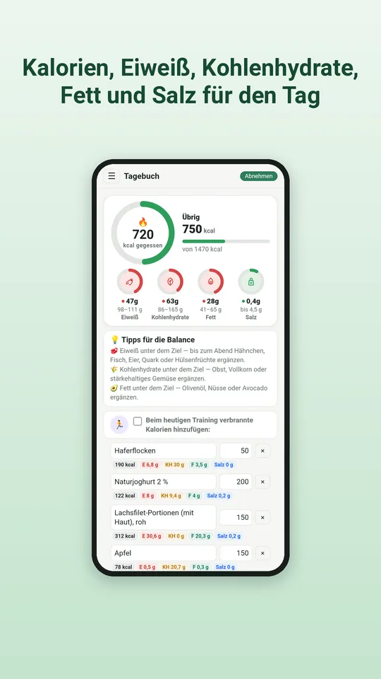
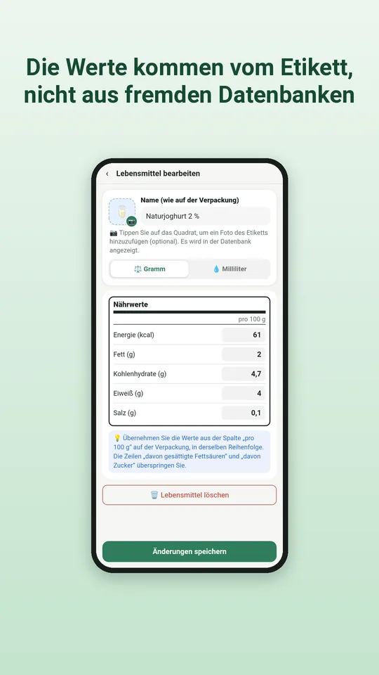
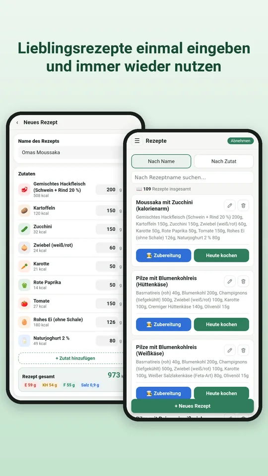
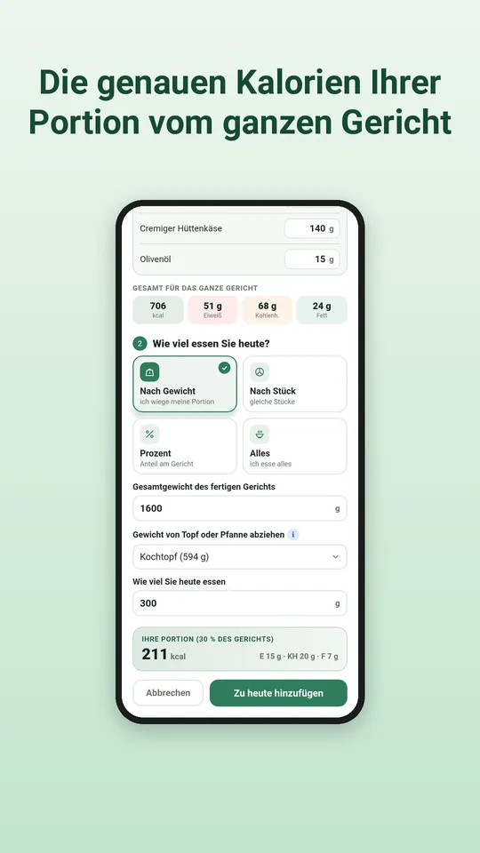
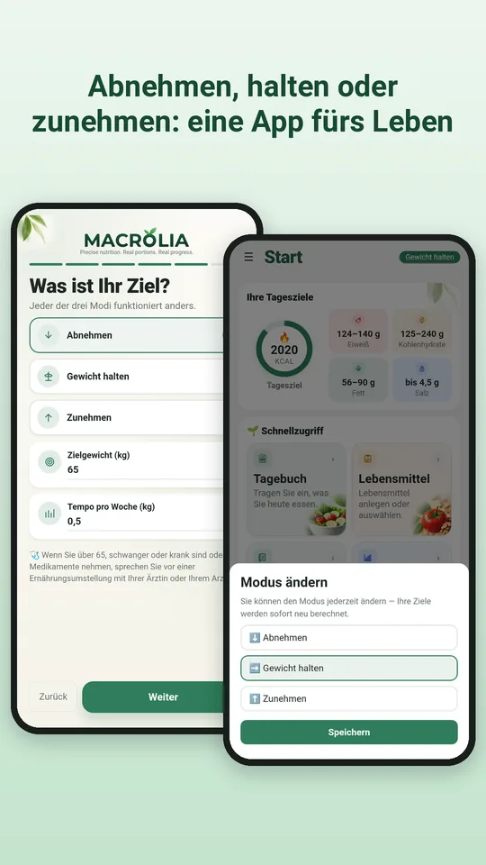
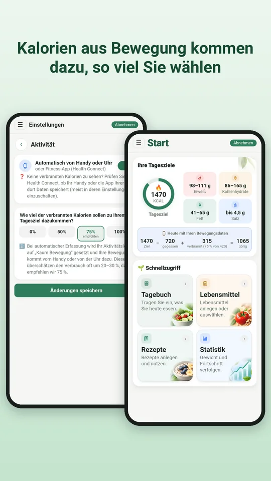
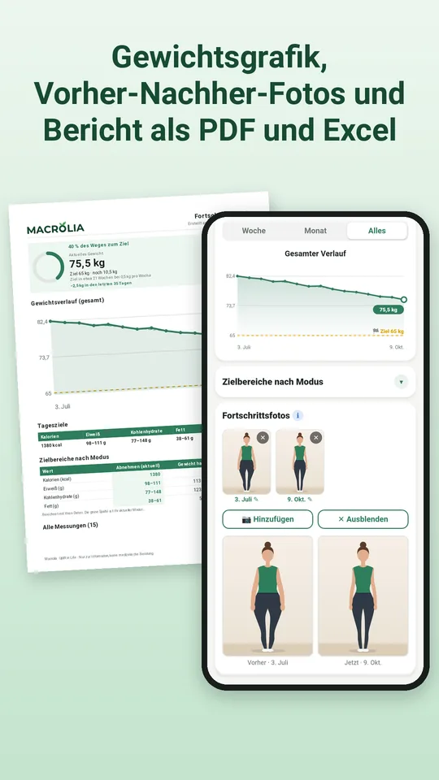
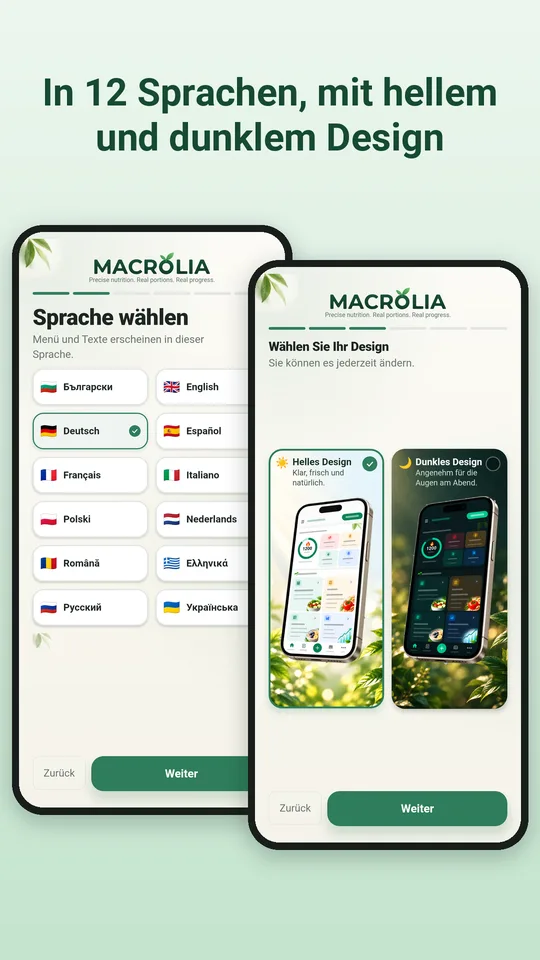

Genaue Kalorien und Makros vom Etikett. Ihre Rezepte, Portionen und Ziele.
Ein Ernährungstagebuch für Menschen, die genaue Zahlen wollen, keine Schätzungen. Jedes Produkt stammt vom Etikett der Packung in Ihrer Hand: einmal eingeben, und jeder Tag und jedes Rezept wird über Jahre richtig berechnet.
Ein Blick in die App








Warum Macrolia
Genau vom Etikett
Sie übernehmen die Werte pro 100 g von der Packung, deshalb stimmen die Zahlen mit dem überein, was Sie wirklich essen. Keine fremden, veralteten oder falschen Daten.
Ihr Familienkochbuch
Sammeln Sie Rezepte aus Omas Heft, aus Kochbüchern und von Ihren Lieblingsseiten. Macrolia berechnet Kalorien und Makros jeder Portion.
Die genaue Portion vom gekochten Gericht
Wiegen Sie das fertige Gericht mitsamt Topf. Macrolia zieht den Topf ab und berechnet genau, wie viel Sie gegessen haben.
Fürs ganze Leben, nicht nur für eine Diät
Abnehmen, Gewicht halten oder zunehmen. Am Ziel wechselt Macrolia auf „Gewicht halten“ und hilft Ihnen, das Ergebnis zu halten.
Sichere Ziele
Ihr Tagesziel folgt der Mifflin-St-Jeor-Formel und klinischen Empfehlungen, mit sicherem Tempo und einer Kalorienuntergrenze.
Kalorien aus Bewegung
Über Health Connect: vom Handy (auch ohne Uhr), von der Smartwatch oder einer Fitness-App. Sie wählen, wie viel zum Tagesziel dazukommt.
Ihre Daten gehören Ihnen
Alles bleibt auf Ihrem Handy. Keine Registrierung, kein Name, keine E-Mail, keine Werbung und kein Tracking. Sie können eine Sicherung speichern, Ihre Daten auf ein neues Handy übertragen und mit einem Tippen alles löschen.
Abo
Macrolia funktioniert mit einem Monats- oder Jahresabo, beide mit 7 Tagen kostenlosem Test. Jederzeit in Google Play kündbar.
In 12 Sprachen, mit hellem und dunklem Design.
Macrolia ist kein Medizinprodukt. Wenn Sie über 65, schwanger oder krank sind oder Medikamente nehmen, sprechen Sie mit Ihrer Ärztin oder Ihrem Arzt, bevor Sie Ihre Ernährung umstellen.